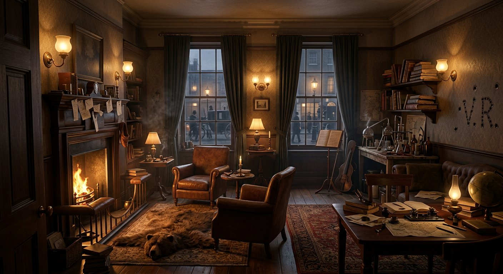

Une carte interactive canon-first · 1881 – 1914Chaque lieu est sourcé par une citation du texte original.

Cliquez sur un point doré pour découvrir chaque objet du canon — les 14 sont sourcés par citation.